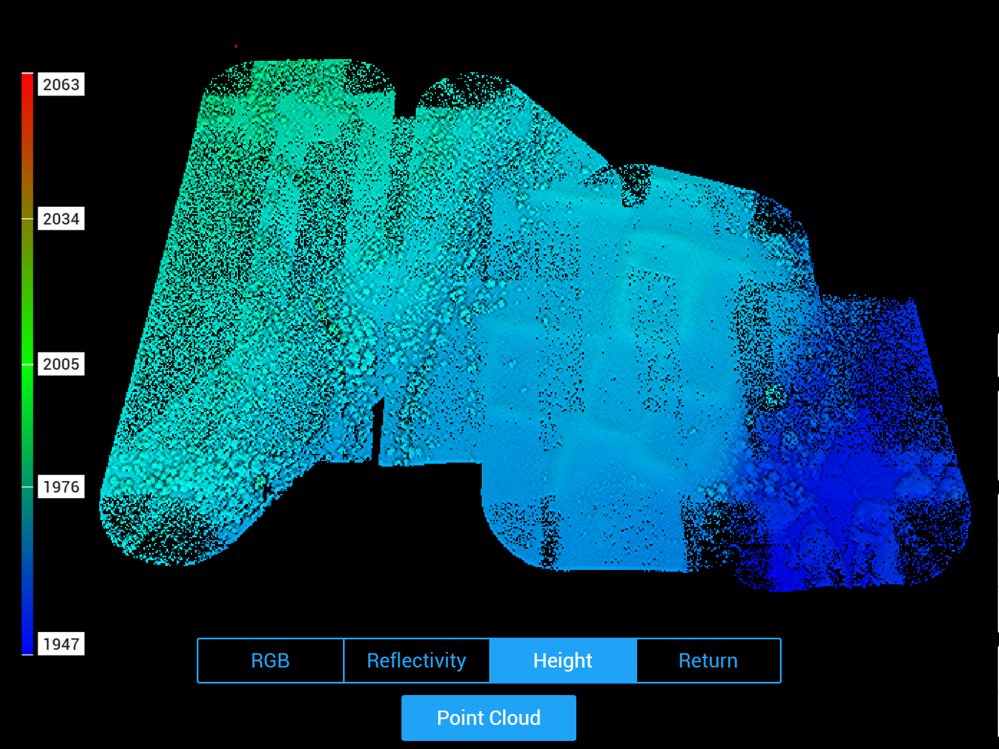

UAS Mapping of Cultural Sites

In summer 2024, I led an effort to collect natural color (RGB) imagery and LiDAR of cultural sites at three State Land Office parcels in northern and central New Mexico, training two new pilots in the process. Flights were conducted using a DJI Matrice 300 RTK equipped with a Zenmuse P1 sensor for RGB imaging and a Zenmuse L1 sensor for LiDAR. We conducted RTK GNSS surveys of ground reference points at each site for geometric registration of the imagery. The imagery was post-processed in Agisoft Metashape Professional to produce an orthomosaic and digital surface model with spatial resolutions of ~0.75cm and ~1.5cm respectively, with horizontal error ~ +/- 1cm and vertical error ~ +/- 10cm. LiDAR data were post-processed in DJI Terra.